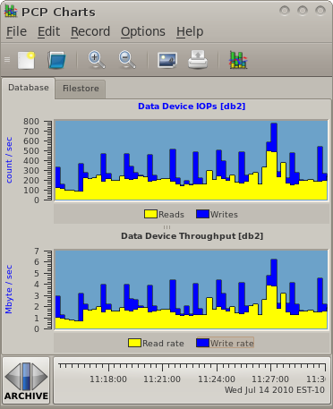
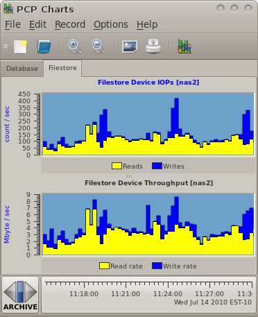

Home · Charts · Time Control
|
|
Home · Charts · Time Control |
pmlogger pmlogsummary PCP::LogSummary pmchart pmafm perl fio |
When comparing multiple storage (or any) systems in terms of performance, it is often useful to create a simulation of the load observed in the actual production environment. Reasons for doing this mainly centre around the difficulty in running a production load in the evaluation environment. For example, recreating databases, filesystems, sanitising user data, installing and configuring (possibly licensed) software, perhaps needing large amounts of time from specialists skilled in those areas - these can all be prohibitive. In such situations it is ideal to model or simulate a workload rather than using an actual production load. When comparing a new system to an existing one, or comparing competing technologies from different vendors, a quick way to run a simulated workload is invaluable.
PCP provides handy tools for providing confidence that a simulation matches reality. Here we demonstrate several of these tools and techniques for applying them toward modelling a workload, using an iSCSI storage comparison as an example. We will also use the open source fio utility to generate the actual I/O workload, once we've used PCP to characterise it, and finally use PCP again to verify the simulations produced.
Step 1 - Gathering Baseline Data |
For this example we will be using data gathered from two production systems - a NAS machine and a database.
These are extracts from production logs that showed a typical load for those two machines during business hours. The data was gathered using pmlogger and the archive management scripts pmlogger_daily. It was reduced to only the metrics of interest for our evaluation using pmlogextract. Setting up and managing logging of performance data in this way is demonstrated elsewhere.
$ source /etc/pcp.confThis command will provide the interactive charts seen here... |
 |
As an aside, the NAS is a Redhat Enterprise Linux 5 machine serving NFS, the database is running Windows Server 2008 and SQL Server 2008 - but this does not really matter for our modelling purposes.
Step 2 - Baseline Summary |
Next we use the pmlogsummary utility to extract a statistical summary of key disk metrics. We do this indirectly, in this example, using the PCP::LogSummary Perl module and a custom wrapper script (model.pl). This generates a spreadsheet with all of the key aspects of performance that our model must aim to reproduce.
As part of this phase of analysis, we must identify the key aspects of the workload we are analysing and break it down into its components, using information we know about the modelled environment. This level of breakdown is useful, as it lets us make informed statements later about how well the model simulates each component.
 |
In this example we have a fairly simple NAS workload where files are only ever written once (and never updated), and subsequently read many times over, and never deleted. We identify typical file sizes through what we know about our production environment, and we know that we are data dominated rather than metadata dominated - so the model will focus on issuing sequential reads and writes to different files, using a mix of I/O sizes that produce the averages and ratios identified in the spreadsheet, and will never overwrite or truncate files. |
In the database case, we identify two workloads, with a total of three components. There is an interactive load (many small random reads and regular log writes) and also a reporting (business intelligence) load. The interactive load is constant, has read and write components - the write components include log writes once every minute, the reads are constant and small (identified in the spreadsheet). The reporting load is completely read dominated (table scans). The regular background write activity does proceed during this time, so our model will cater for this characteristic by generating the log write traffic separately and then using that in both loads. |
 |
$ cat model.pl # Setup some spreadsheet metadata - fonts, colors, etc # Create a worksheet, configure a few columns # Write data - starting at row 0 and column 0, moving across and downIf you have the PCP::LogSummary and SpreadSheet::WriteExcel Perl modules installed, run it: $ perl model.pl |
Step 3 - Simulation |
Armed with our workload summary, we will begin to produce a model. To generate I/O we will use the Linux fio utility. This reads a workload description from a configuration file, preallocates files in a test directory, then runs the defined workload, and produces a statistical summary of the I/O characteristics observed. In our case, where we are planning to compare different vendors storage, we are particular interested in the I/O latency characteristics while running our different workloads, and to a lesser extent the throughput and IOPS numbers - these should be constant thanks to our workload generator and as long as they are achieved, its the latency statistics that concern us (maximum, average, standard deviation).
The fio configuration file which generates our workloads is model.fio. While testing the model, the I/O submission patterns have been monitored using the same techniques as before to ensure the generated load matches as closely as possible with production - this was an iterative process, fiddling fio knobs until good matches were achieved.
Below are an extract of the results, highlighting some of the statistics that are of particular interest in our scenario. These numbers suggest we have matched up with our production load from the spreadsheet (IOPs and throughput) and the latency numbers give good points of comparison when we run the model against other configurations.
Extracts from nasread.out and naswrite.out
Description : [NAS reads workload model]
read : io=739MB, bw=2,523KB/s, iops=78, runt=300003msec
clat (usec): min=190, max=176K, avg=3343.45, stdev=2480.24
lat (usec): min=191, max=176K, avg=3344.00, stdev=2480.24
bw (KB/s) : min= 2301, max= 2808, per=25.02%, avg=2525.62, stdev=40.32
...
Description : [NAS writes workload model]
write: io=361MB, bw=1,233KB/s, iops=37, runt=300026msec
clat (usec): min=276, max=1,325K, avg=2721.65, stdev=47070.32
lat (usec): min=277, max=1,325K, avg=2722.20, stdev=47070.32
bw (KB/s) : min= 34, max= 4486, per=25.12%, avg=1239.08, stdev=178.78
|
Step 4 - Profit! |
Now that we have an easily reproducible workload, we can throw it at any number of different devices (different vendors), configurations (different RAID configurations, with snapshots) and have a reasonable level of confidence that observations will resemble what would happen in production.
Note that the latency numbers that fio has calculated for us are excellent indicators - if we did not have these, we could make use of the device utilisation PCP metrics (disk.dev.avactive or disk.dev.idle) as alternate comparison points.
Copyright © 2007-2010 Aconex |